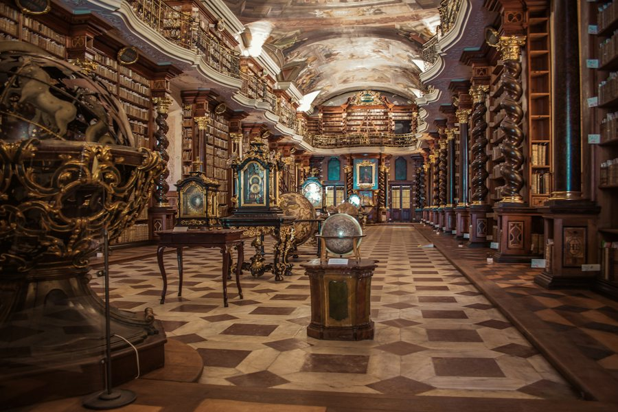

I
Gêneros
Dez alas, do romance ao terror, para você descobrir por onde o seu gosto caminha.
Percorrer as alasUm porto seguro para leitores virtuais
Bem-vindo, leitor. Puxe uma cadeira: as estantes estão à sua espera.
“O lugar onde você para, e sempre volta.”
Ler sempre foi um gesto solitário, mas nunca deveria ser um gesto de solidão. Na internet, porém, o leitor anda perdido: as recomendações se espalham entre algoritmos, vídeos de trinta segundos e listas que parecem todas iguais. Encontrar o próximo livro é difícil; encontrar alguém para conversar sobre ele, mais ainda.
O Marca-Página nasceu para ser o seu porto seguro. Funciona como uma biblioteca antiga: um acervo organizado em alas por gênero, resenhas honestas escritas com calma e um salão de encontro, o Clube do Leitor, onde leitores leem juntos, trocam ideias e deixam as próprias resenhas.
Como o próprio nome diz, é o lugar onde você para, e para onde sempre volta.
Três portas abertas para o seu próximo capítulo.
Dez alas, do romance ao terror, para você descobrir por onde o seu gosto caminha.
Percorrer as alasQuarenta títulos com resenhas originais e sem spoilers para guiar a sua próxima escolha.
Abrir o acervo
Um livro por mês, encontros online e boas conversas entre quem ama ler.
Entrar no ClubeLer é sonhar pela mão de outrem.
Fernando Pessoa · Livro do Desassossego
Todo mês, um livro escolhido com carinho e um encontro online para conversar sobre ele. Há sempre uma cadeira vaga perto da lareira, e ela é sua.